浅谈数字人仿真的渲染技术（三）
前言
这篇文章是我在OGEEK上做过的《浅谈数字人仿真的渲染技术》分享的第三部分，在这一部分我会着重介绍数字人的毛发渲染的技术。
毛发
在前面的内容，我们大致了解了一些皮肤相关的技术，接下来我们再简单了解一些毛发的渲染算法。
和皮肤一样，其实毛发的构造比我们预想的也要复杂许多，它包括表皮的角质层，角质层里面的皮质，以及发髓。
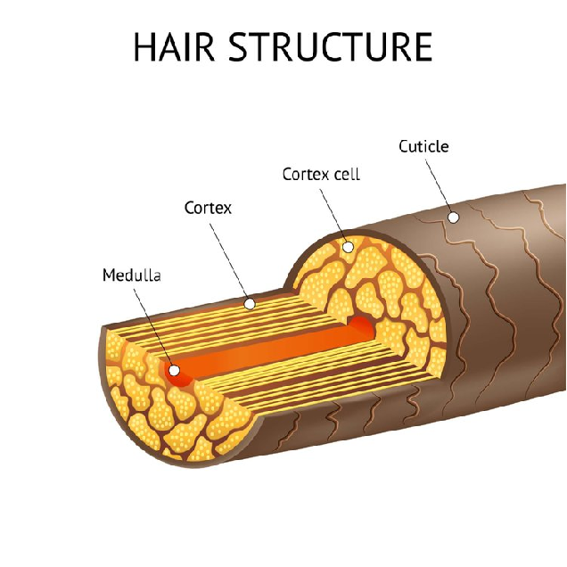
角质层有坑坑洼洼的表面，而且头发的坑坑洼洼具有较为统一的指向性，从发根指向发尾，简化后的头发模型如下图所示。
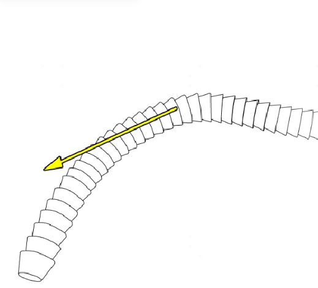
Kajiya-Kay模型
下面我们来了解一下可能是游戏中毛发渲染最常用的毛发渲染模型，Kajiya-kay模型。
简介
首先需要说明的是，Kajiya-Kay模型是一个基于经验的模型，也就是说这个模型并不是根据头发的物理结构得出的，所以会有一些并不真实的地方。
作为一个1989年的shading model，它具有算法简单，便于理解，计算量小。且头发的主高光的性价比高，效果明显。
那么kajiya-kay模型的一个核心就是各向异性高光，不知道有没有对各向异性不熟悉的朋友，这里简单说明一下，各向异性就是物体的某些特征根据方向的不同而有所变化。
如下图所示，头发在微观层面的一小段我们把它简化为一个圆柱体，圆柱体的一个截面的normal均匀分布。但是这个normal都是从横截面的中心向外扩散的，不会出现沿着这个圆柱体的法线，其实这就是一种各向异性的体现。
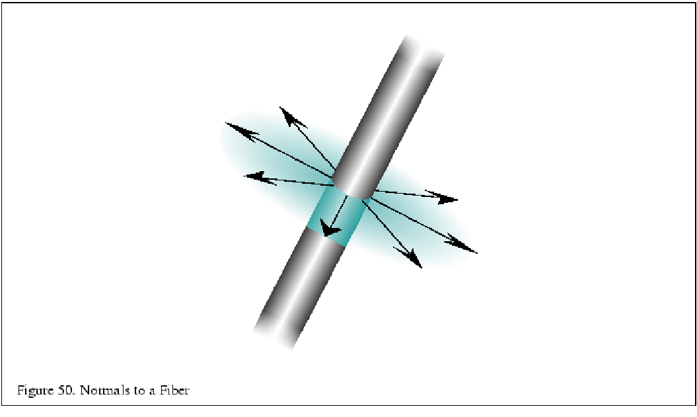
我们渲染头发的时候，单个像素里面是一根或者多根极其短且细的头发，按照普通的模型一般是获取单个像素的一个唯一法线的值，但是头发可能在一个像素里面存在着n个法线，法线的不唯一性导致不能再简单的用一个固定法线值去模拟了。
因此根据经验，kajiya-kay算法采用了一种近似的方法。头发的发根到发尾的方向是这跟头发的切线方向，这个方向对于头发来说是统一的，同时也方便美术去制作，因为在一个圆柱体截面上，切线的方向都是一致的。
如下图所示，L是光线方向在头发某点切线T方向上的分量，我们需要的法线N，它满足垂直于切线，且与L，T同平面，且点乘光线L大于0的方向，我们可以用这个作为N法线来近似高光所需要的法线。只要能够获取到发线，就可以按照我们前面提到的方法计算出这个点的高光了。
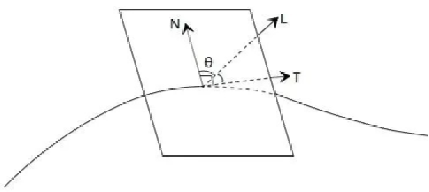
我们是通过切线，光线和视线的方向来得到法线，kajiya-kay模型的公式其实也变成了和切线相关的.
这里大概贴一下kajiya-kay模型的公式，这里我们不去推导这个公式。主要是大家可以看到公式的参数是和切线T，以及半程向量H（光线向量和视线向量的中间）相关的。
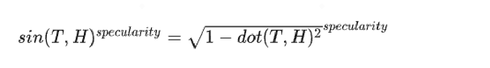
对比
这里我们放一个高光的对比效果，黑球上的高光是普通的高光计算，绿球则是带有各向异性计算出来的高光，可以看见绿球的高光有种我们叫天使环的效果，这也是人物头发高光经常会出现的效果。
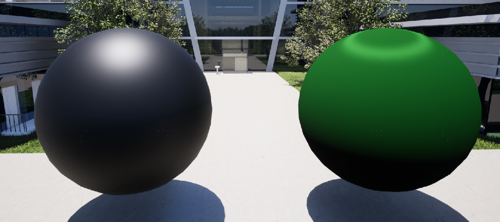
为了更加贴近头发我们添加一个头发的法线贴图看看效果，同时也给个纹理。
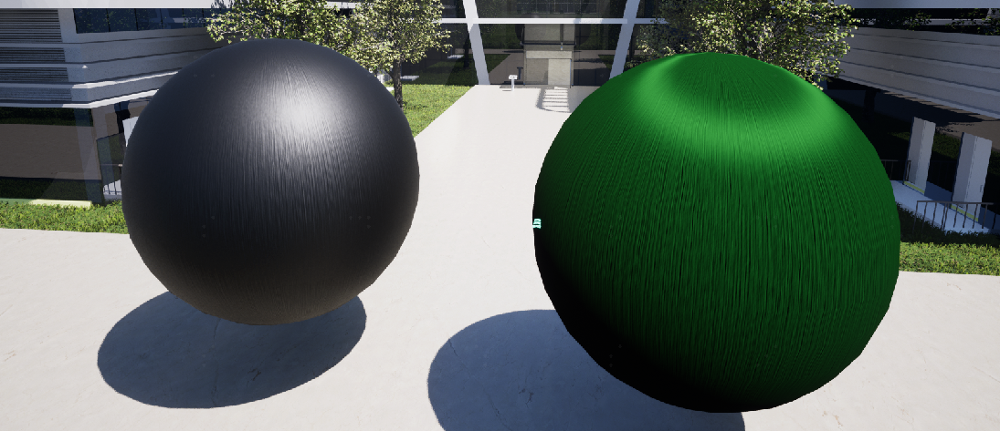
优化
但是其实仅仅出现天使环效果也不够理想，这是因为Kajiya-Kay模型只是基于经验而不是真正的物理。
经过观察头发的高光，法线一般是有一个主要高光的，这个主要是受光源颜色的影响，大部分时候是白色。另外一个是受头发颜色的影响，会生成次一点的带颜色高光的。这个其实是有物理意义的，也就是光进入头发里面传输然后透射出来造成的效果。
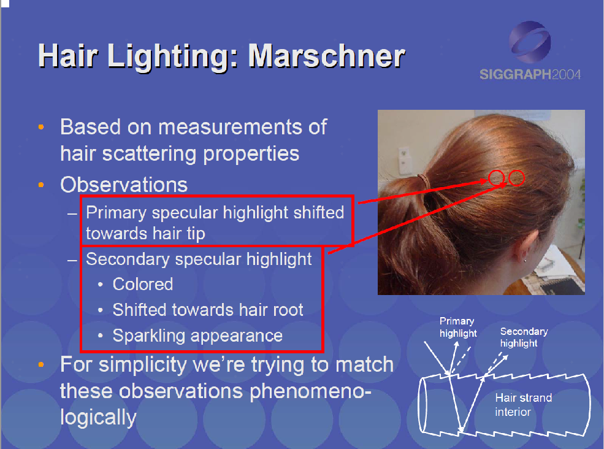
所以现在一般kajiya-kay会加上两个高光的优化。这个效果有时会被称为近似Marschner模型。
这里我们提到了一个Marschner模型，这个是基于物理建模的毛发渲染模型，我们后续再详细介绍。
如何实现上述的双层高光效果呢？其实也很简单，就是算两个高光，然后偏移其中一个就好了。
我们前面看过kajiya-kay的公式，公式的参数是切线和半程向量。按照切线从发根指向发梢，我们在切线上加上像素点的法线并归一化，其实就相当于将切线沿着头发上移或者下移了。
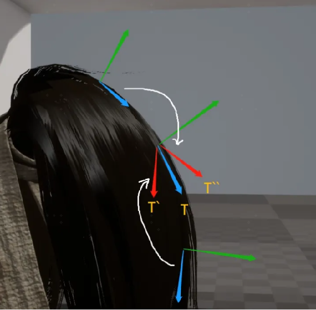
同时我们增加一个扰动的偏移贴图，可以让高光更有沿着发丝等表面的感觉。
左下是偏移贴图，右边是增加了高光偏移和偏移贴图的最终效果，可以看出效果有质的提升。
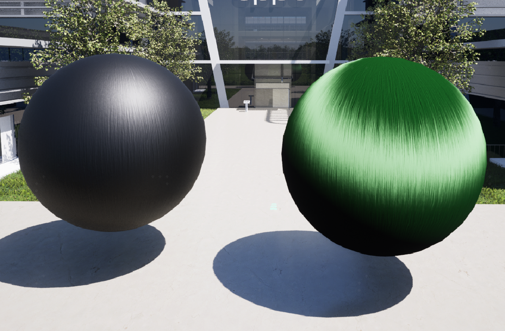
不过kajika-kay模型虽然久经沙场，但它始终是基于经验的，他的模型过于简单。
并且kajika-kay模型假设头发纤维是光滑的圆柱体，而我们之前见到过头发真正的表面是粗糙的鳞片组成的不规则几何体，所以有很多细节是不够准确的。
接下来我们来简单介绍一下基于物理的marschner模型。
Marschner模型
Marschner’s Model是基于头发纤维的结构，进行了相对准确的物理分析并得出的计算方法。
头发纤维从微观角度来看，实际上是一个从外到内有很多层的结构，它的最外层像鳞片一样，光线在穿过层层头发纤维内部的过程中也会发生折射，反射等，因此我们看到的最终头发呈现的颜色实际上是多条光路综合作用的结果。
该模型将毛发的光照分为三个部分
- 反射：主高光，刚刚kajiya-kay算法其实主要处理的就是这部分，但是marschner模型会考虑头发的角质层的结构，所以说高光是更加有方向性的
- 传输-传输：光线照射并穿透毛囊，然后从另一边照射出去。这是光线在一定发量中的散射过程。
- 传输-反射-传输路线，光线进入毛囊，从内表面边界反射出来，然后再照射出来。这样产生的是次高光。这也是我们在kajiya-kay近似marschner处理中所做的工作
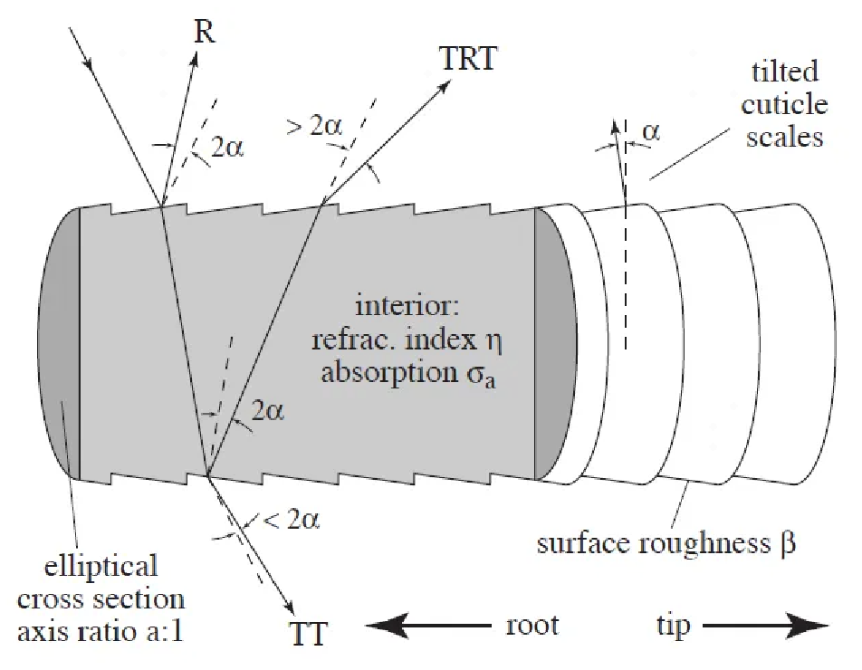
其他的光线分量对视觉效果影响比重比较小，我们在实时渲染一般就忽略了。
由于头发的复杂造型，为了便于分析光线的散射，一般把头发上光的散射行为分为两类，即纵向散射和方位角散射。
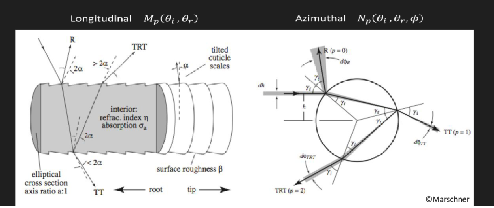
纵向散射是沿着头发发根到发尾的散射，对于光滑的圆柱体，给定入射方向，反射方向确定的，如下图，但是头发纤维的表面是比较粗糙的，因此并不会发生精确的镜面反射，于是我们就需要一个函数来估计在给定的出射方向（观察方向）上，到底有多少比例的光线射出。这个函数和入射L1、出射方向L2有关，我们用M(L1,L2)来表示，可以简单的认为M就是一个高斯分布的概率密度函数。
方位角散射是表示垂直于发丝方向的散射角度和能量的变化，这期间可能会发生比较多的折射和透射，我们也可以用一个函数来估计发生方位角散射时给定出射方向上光线的比例，这个函数除了和入射方向、出射方向投影在圆柱法平面的方位角有关，还和头发内部的折射率n有关，我们用N函数来表示。
那么每一个光路，R，TT，TRT，都包含了纵向散射和方向角散射，所以我们可以得出一个BSDF模型的公式，即Sp = Mp * Np, p = R,TT,TRT，
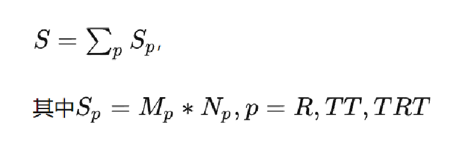
M和N的数值，一般是预处理做成两张LUT，在实时渲染点时候方便直接查找。这里和我们在皮肤渲染的方式有一些类似。不过这种方法一般只支持一种头发颜色和粗糙度。
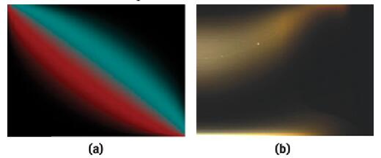
当然，Marschner模型的关键，也就是M和N函数的计算会涉及比较深入的数学推导和物理原理，今天这里我们就不深入了，有兴趣的同学可以看一下steve marschner的论文。
绝大部分的现代渲染器，包括虚幻引擎，目前使用的也是marschner模型来做毛发渲染。
其他领域
目前，我们只是浅谈了一些写实数字人的部位的渲染技术，但是还有很多部位是需要特殊处理的。
比如说作为心灵窗口的眼睛，有非常复杂的生态构造，且充满了液体。在渲染上也会遇到光线的反射散射折射。
牙齿其实也需要用到次表面散射的模型，他的材质会有一种玉石的散射效果。
这些部分其实都可以展开来讲。今天时间有限，我们暂时不深入去探讨。有兴趣并且对UE有了解的同学可以去看一下UE的metahuman工程。
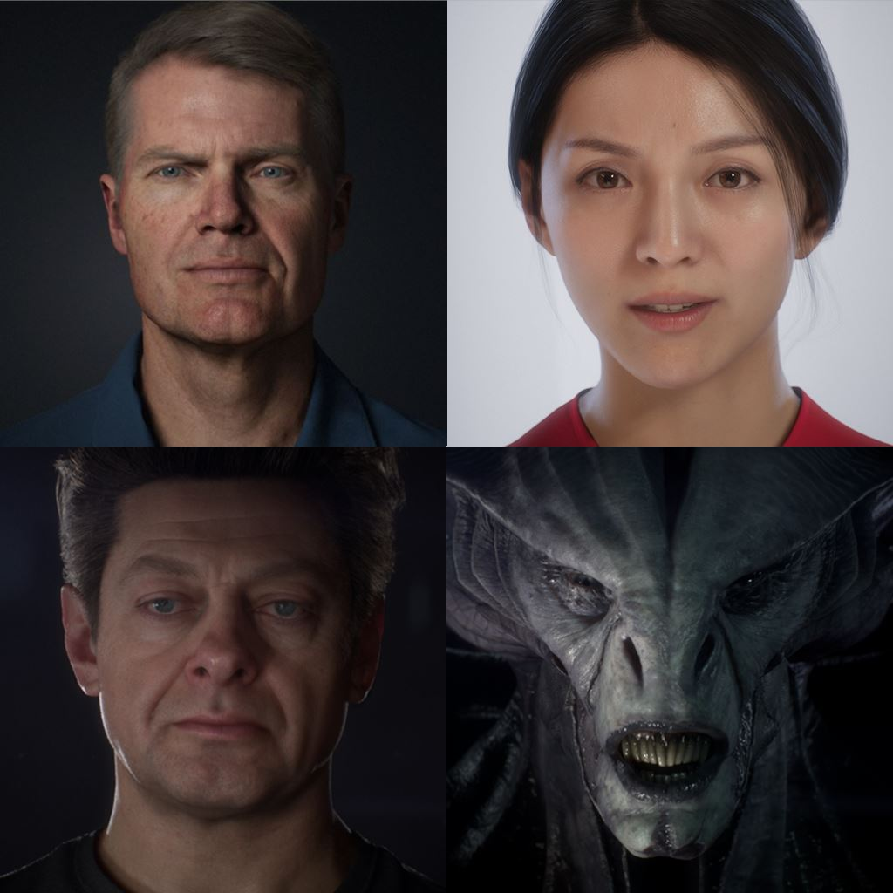
结语
今天这篇文章简短的介绍了一下数字人毛发渲染的技术，后面的分享将会介绍**非真实感渲染（Non-photorealistic Rendering, NPR）**技术，通常这项技术会被用在渲染卡通风格的内容。